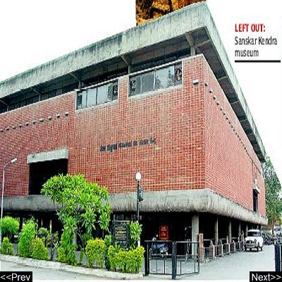

|  |
|
Sanskar Kendra Sanskar Kendra is a museum at Ahmedabad, India, designed by the architect Le Corbusier. It is a city museum depicting history, art, culture and architecture of Ahmedabad. Address: 6, Pucharab Apartment, Paldi, Ahmedabad, Gujarat 380006 Opened: 1956 Hours: 10.00 am – 8.00 pm Phone: 079 2657 8369 Architect: Le Corbusier |